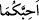

“Benim bildiğimi siz de bilmiş olsaydınız çok ağlar, az gülerdiniz”[131] buyurdu. O
vakit Cibrîl (a.s.) inerek ona: “Allah Teâlâ’nın “Doğrusu güldüren de ağlatan da
O’dur” âyetini inzal buyurduğunu haber verdi. Bunun üzerine Nebi (s.a.) o topluluğun
yanına dönerek onlara: “Kırk adım atmamıştım ki Cibrîl (a.s.) bana gelip: “Bu
topluluğun yanına git! Onlara Allah Teâlâ’nın ‘Doğrusu güldüren de ağlatan da
O’dur’ diye buyurduğunu söyle!...” dedi.
Tâhir el-Makdisî’ye meleklerin gülüp gülmediği sorulunca: “Onlar cehennemin
yaradılışından beri Arş’ın altında gülmediler” diye cevap vermiştir. Nebi (s.a.)
Cebrail’e: “Bana ne oluyor ki Mikail’i hiç gülerken görmedim?”[132] deyince, Cibril
(a.s.) ona: “Mikail cehennemin yaratıldığı zamandan beri hiç gülmedi”[133] diye karşılık
vermiştir.
Hz. Ömer (r.a.)’e Rasûlullah (s.a.)’ın ashabının gülüp gülmedikleri hakkında bilgi
sorulunca o: “Evet vallahi gülerlerdi. Ancak îmanları kalplerine sâbit dağlar gibi
yerleştirilmiş bir halde gülerlerdi” diye cevap vermiştir.
Semmâk b. Harb’den naklolunduğuna göre o şöyle demiştir: “Cabir b. Semure
(r.a.)’e hiç Rasûlullah (s.a.) ile aynı mecliste bulunup bulunmadığını sordum. Bana
“evet!” diye karşılık verdi. Sahabelerinin onunla birlikte bulunduğu ve şiir söylemede
yarıştıkları, câhiliye devrindeki bazı şeyleri anıp güldükleri, Rasûlullah’ın da onlarla
tebessüm ettiği bir sırada Rasûlullah’ın meclisinde bulundum dedi.”
Yahya (a.s.) Îsâ (a.s.) ile karşılaşınca Îsâ (a.s.), Yahya (a.s.)’ın yüzüne karşı
tebessüm etmiş, bunun üzerine Yahya (a.s.): “Bana ne oluyor ki seni böyle mütebessim
(neşeli) bir yüzle görüyorum? Sanki sen cehennemden emin gibi davranıyorsun.”
deyince Îsâ (a.s.): “Peki bana da ne oluyor ki seni asık suratlı ve karamsar bir çehreyle
görüyorum?” diye karşılık verdi. Bunun üzerine her ikisi de: “Allah Teâlâ bu konuda
vahiy indirmeden buradan ayrılmayalım” deyip anlaştılar. Allah Teâlâ onlara:
“Mütebessim çehreli olunuz! Benim kanâatimi sorarsanız, bana en yakın olanınız en
güzel çehreli/mütebessim olanınızdır” buyurmuştur. Rivâyete göre () kelimesi,
“mütebessim yüzlü olunuz” anlamında kullanılan bir emir fiildir.
Hasan Basrî der ki: “Ey insanoğlu! Kefenin kumaşçıdan çıkmış olabileceği halde
gülmektesin. Oysa Nuh (a.s.): “Benim oğlum ehlimdendir.” dediği için üç yüz yıl
ağlamıştır.” Ka’b da şöyle der. “Allah’ın haşyetinden öyle ağlamalıyım ki gözyaşlarım
sel olup beni götürsün. Zira benim cennete girmem, altından olan bir dağı tasadduk
etmemden daha sevimlidir. Faydalı olan sadece gözün ağlaması değil, aynı zaman da
kalbin de ağlamasıdır.”
Göz çeşme başından sular akıtıp
Üzerinde toz, toprak, kir ne varsa yıka, temizle.